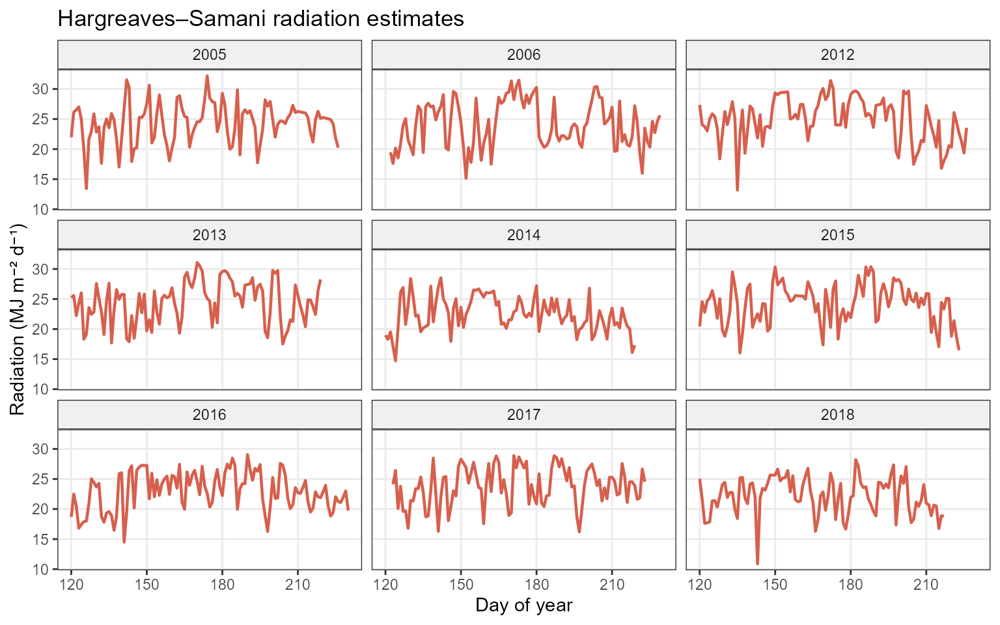
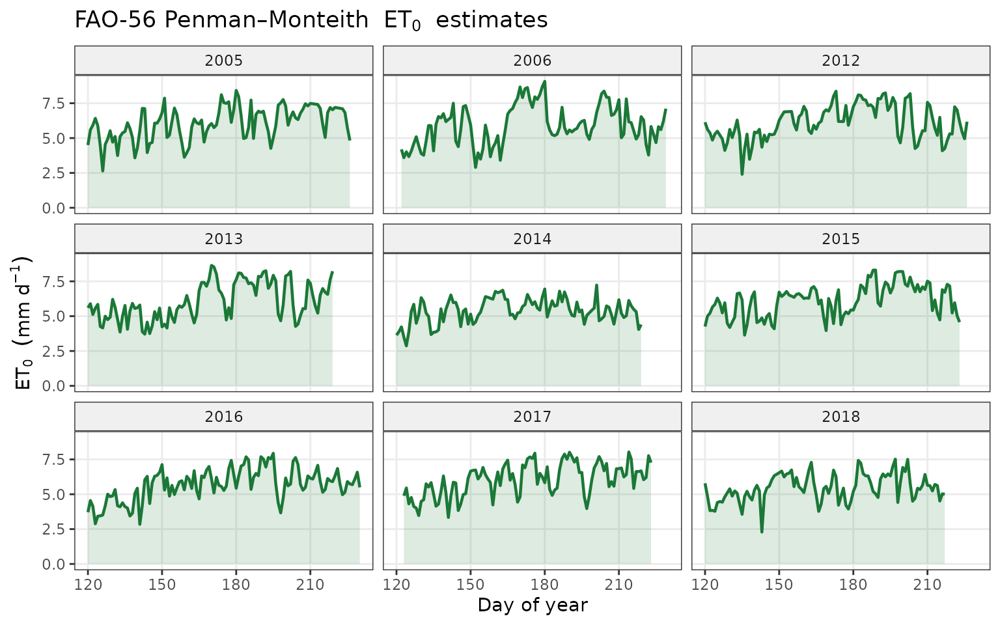

Overview
cumba_scenario() and cumba_experiment() can
internally estimate two key driving variables from basic weather
inputs:
-
Solar radiation — Hargreaves–Samani formula,
requiring only daily Tmax, Tmin, and site latitude
(
estimateRad = TRUE). -
Reference evapotranspiration ET₀ — a
temperature-based approximation of the FAO-56 Penman–Monteith equation,
requiring Tmax, Tmin, and latitude
(
estimateET0 = TRUE).
This vignette runs the model in scenario mode over all years in
tomatoFoggia and inspects the seasonal behaviour of both
estimators.
Load data and run the model
library(cumba)
library(dplyr)
library(ggplot2)
library(lubridate)
data(tomatoFoggia)
data(cumbaParameters)
weather_obs <- tomatoFoggia$weather
# Run over all site-years; fullOut = TRUE exposes radiation and et0 columns
out <- cumba_scenario(
weather = weather_obs,
param = cumbaParameters,
estimateRad = TRUE,
estimateET0 = TRUE,
transplantingDOY = 120,
irrigationStrategy = list(
vegetative = list(wsLevel = 0.5, turnMin = 4),
reproductive = list(wsLevel = 0.5, turnMin = 4),
ripening = list(wsLevel = 0.5, turnMin = 4)
),
fullOut = TRUE
)
#> CUMBA running in deficit irrigation mode
#> 🍅 running experiment 1 in site Foggia and year 2005
#> 🍅 running experiment 2 in site Foggia and year 2006
#> 🍅 running experiment 3 in site Foggia and year 2012
#> 🍅 running experiment 4 in site Foggia and year 2013
#> 🍅 running experiment 5 in site Foggia and year 2014
#> 🍅 running experiment 6 in site Foggia and year 2015
#> 🍅 running experiment 7 in site Foggia and year 2016
#> 🍅 running experiment 8 in site Foggia and year 2017
#> 🍅 running experiment 9 in site Foggia and year 2018
#>
sim <- out |> select(year, doy, radiation, et0)
glimpse(sim)
#> Rows: 936
#> Columns: 4
#> $ year <dbl> 2005, 2005, 2005, 2005, 2005, 2005, 2005, 2005, 2005, 2005, …
#> $ doy <dbl> 120, 121, 122, 123, 124, 125, 126, 127, 128, 129, 130, 131, …
#> $ radiation <dbl> 21.97549, 26.14867, 26.52642, 27.02956, 24.94472, 19.90342, …
#> $ et0 <dbl> 4.498681, 5.590547, 5.928367, 6.417341, 5.884589, 4.454225, …Radiation estimates — seasonal dynamics
The Hargreaves–Samani method approximates solar radiation from the daily temperature range, which correlates with cloud cover. The estimates track the expected bell-shaped seasonal pattern for a Mediterranean site at latitude ~41°N.
ggplot(sim, aes(doy, radiation)) +
geom_line(colour = "#d6604d", linewidth = 0.8) +
facet_wrap(~year, ncol = 3) +
labs(
x = "Day of year",
y = "Radiation (MJ m⁻² d⁻¹)",
title = "Hargreaves–Samani radiation estimates"
) +
theme_bw(base_size = 11) +
theme(
strip.background = element_rect(fill = "#f0f0f0"),
panel.grid.minor = element_blank()
)
ET₀ estimates — seasonal dynamics
The temperature-based ET₀ follows the same seasonal trajectory as radiation, rising through summer and falling toward harvest. Values in the 4–9 mm d⁻¹ range are typical for Foggia in June–August.
ggplot(sim, aes(doy, et0)) +
geom_area(fill = "#1b7837", alpha = 0.15) +
geom_line(colour = "#1b7837", linewidth = 0.8) +
facet_wrap(~year, ncol = 3) +
labs(
x = "Day of year",
y = expression(ET[0]~~(mm~d^{-1})),
title = expression("FAO-56 Penman–Monteith"~~ET[0]~~"estimates")
) +
theme_bw(base_size = 11) +
theme(
strip.background = element_rect(fill = "#f0f0f0"),
panel.grid.minor = element_blank()
)
Summary statistics by year
sim |>
group_by(year) |>
summarise(
n_days = n(),
mean_rad = round(mean(radiation, na.rm = TRUE), 1),
max_rad = round(max(radiation, na.rm = TRUE), 1),
mean_et0 = round(mean(et0, na.rm = TRUE), 1),
season_total_et0 = round(sum(et0, na.rm = TRUE), 0)
) |>
rename(
Year = year,
`Days simulated` = n_days,
`Mean radiation (MJ m⁻² d⁻¹)` = mean_rad,
`Max radiation (MJ m⁻² d⁻¹)` = max_rad,
`Mean ET₀ (mm d⁻¹)` = mean_et0,
`Season total ET₀ (mm)` = season_total_et0
)
#> # A tibble: 9 × 6
#> Year `Days simulated` `Mean radiation (MJ m⁻² d⁻¹)` Max radiation (MJ m⁻² d…¹
#> <dbl> <int> <dbl> <dbl>
#> 1 2005 107 24.4 32.2
#> 2 2006 108 24.1 31.5
#> 3 2012 107 24.9 31.4
#> 4 2013 100 24.5 31.1
#> 5 2014 100 22.5 28.5
#> 6 2015 104 24.2 30.4
#> 7 2016 111 23 29.1
#> 8 2017 101 23.9 28.9
#> 9 2018 98 22.2 28.2
#> # ℹ abbreviated name: ¹`Max radiation (MJ m⁻² d⁻¹)`
#> # ℹ 2 more variables: `Mean ET₀ (mm d⁻¹)` <dbl>, `Season total ET₀ (mm)` <dbl>